FOTOGALERIE
HLAVNÍ POSTAVY
Ryo Yamada
Nijika Ijichi
Hitori "Bocchi" Gotoh
Ikuyo Kita
VEDLEJŠÍ POSTAVY
Seiko Ijichi
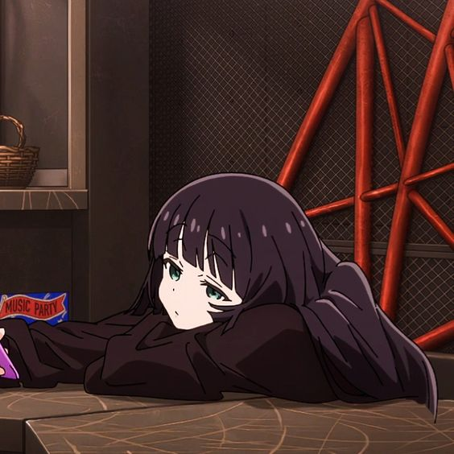
PA-san
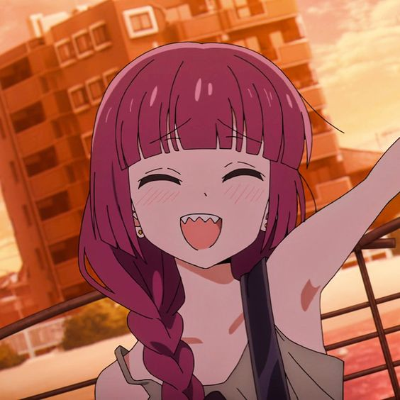
Kikuri Hiroi
COVERY
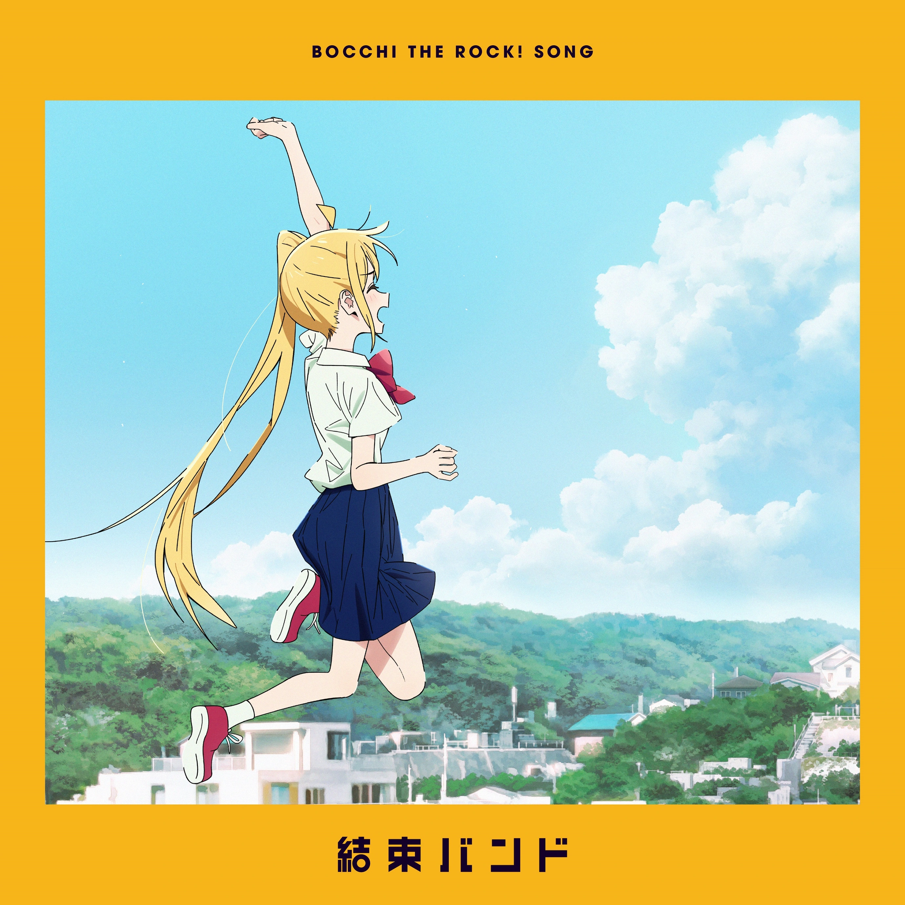
Singl - Wasurete
Yaranai
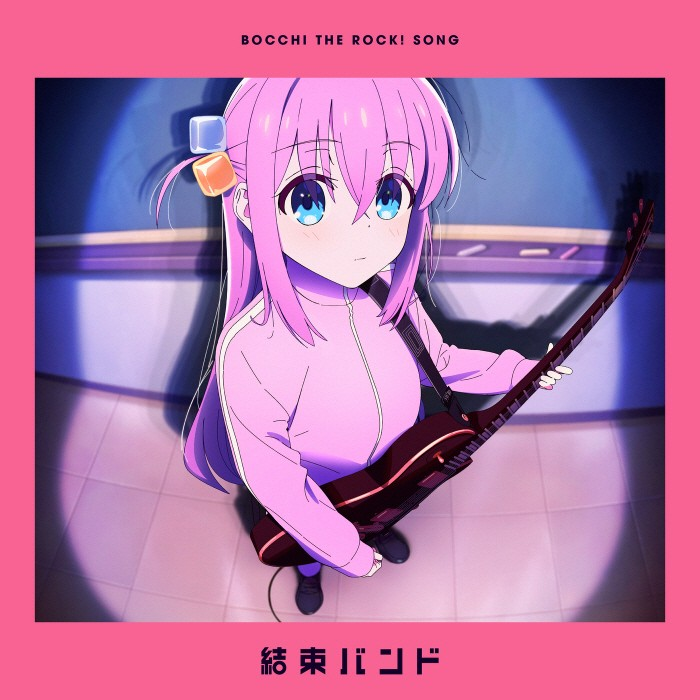
Singl - Guitar to Kodoku
to Aoi Hoshi
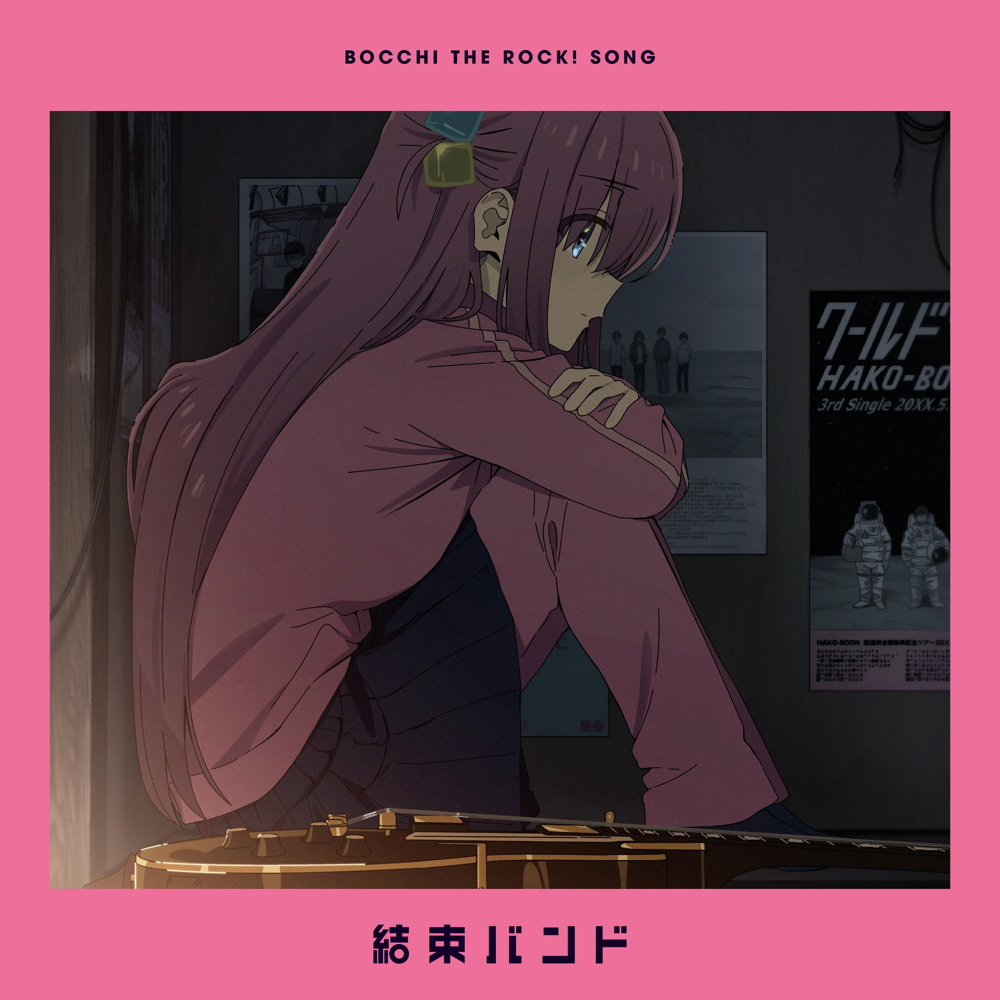
Singl - Rockn' Roll,
Morning Light Falls on You
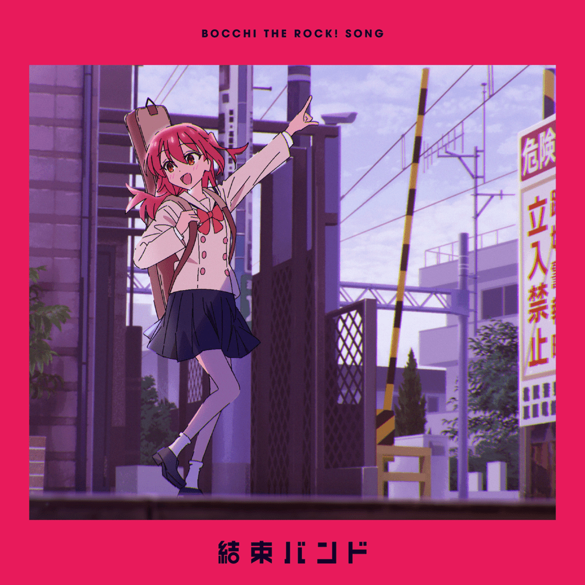
Singl - If I Could Be
a Constellation
FANARTY
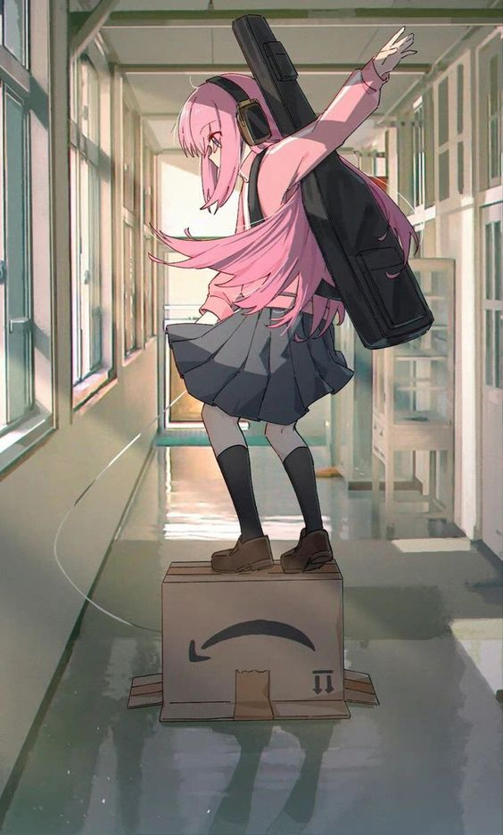
Bocchi- JLT4n
Ryo Yamada - JLT4n
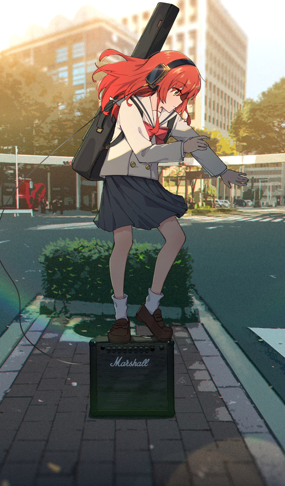
Ikuyo Kita - JLT4n
VTIPNÉ MOMENTY
Bocchi se mění na 3D model
Agónie být vnímán
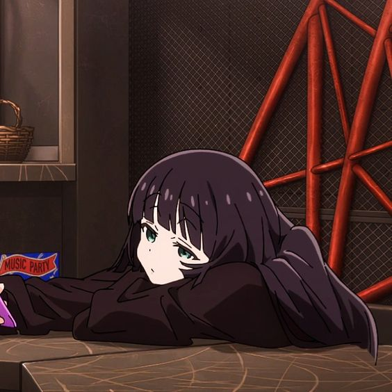
PA-san
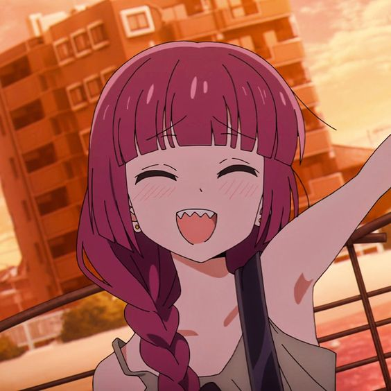
Kikuri Hiroi
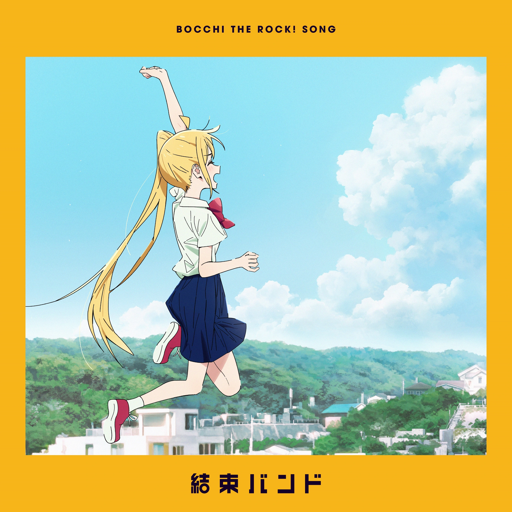
Singl - Wasurete
Yaranai
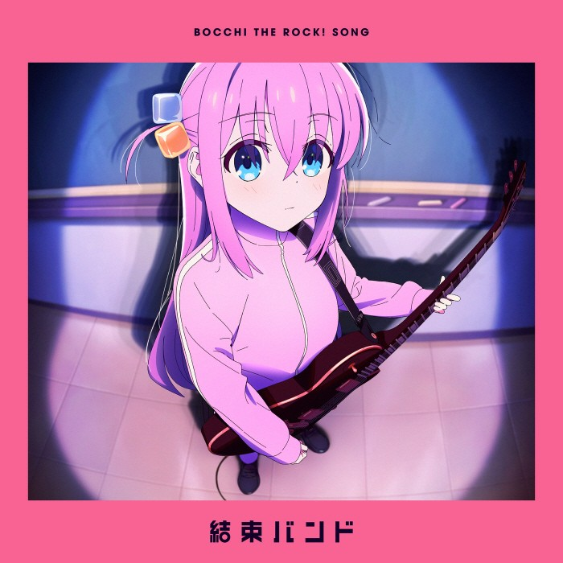
Singl - Guitar to Kodoku
to Aoi Hoshi
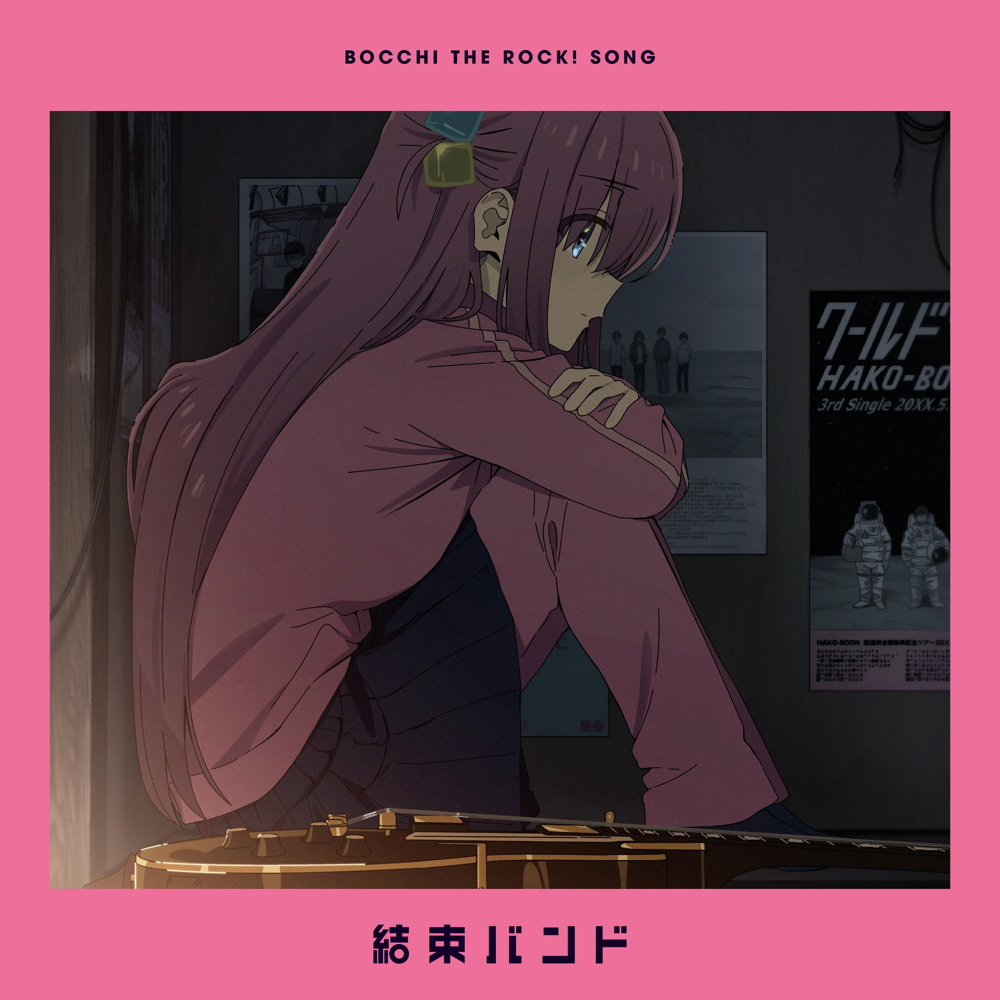
Singl - Rockn' Roll,
Morning Light Falls on You
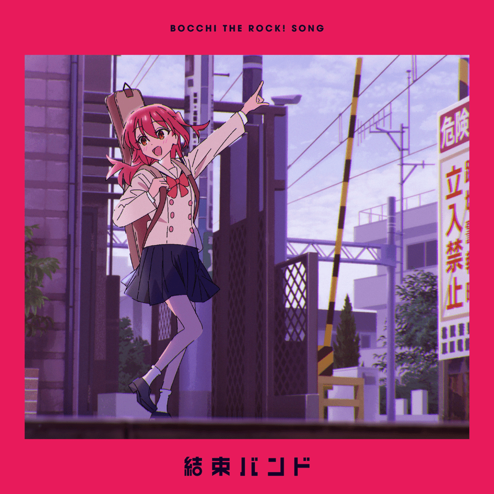
Singl - If I Could Be
a Constellation
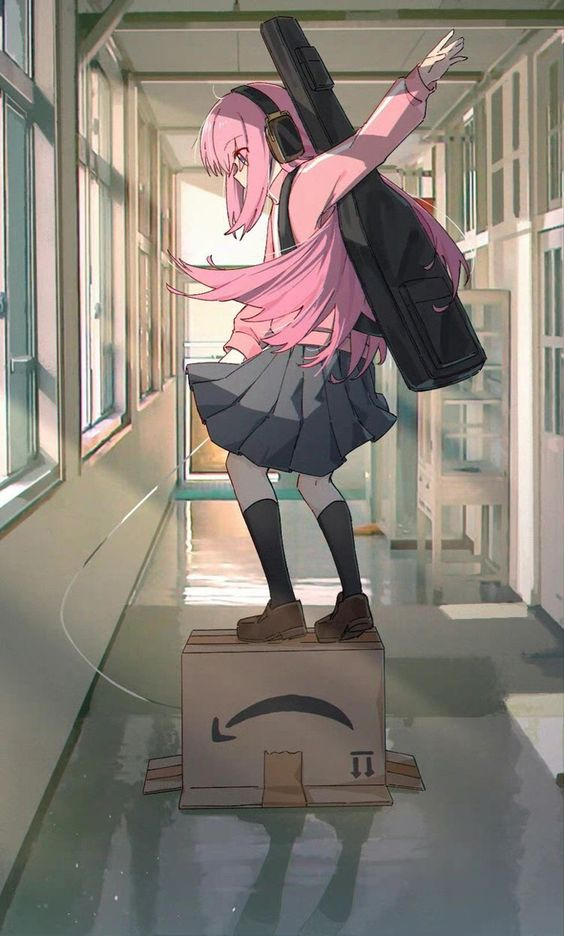
Bocchi- JLT4n
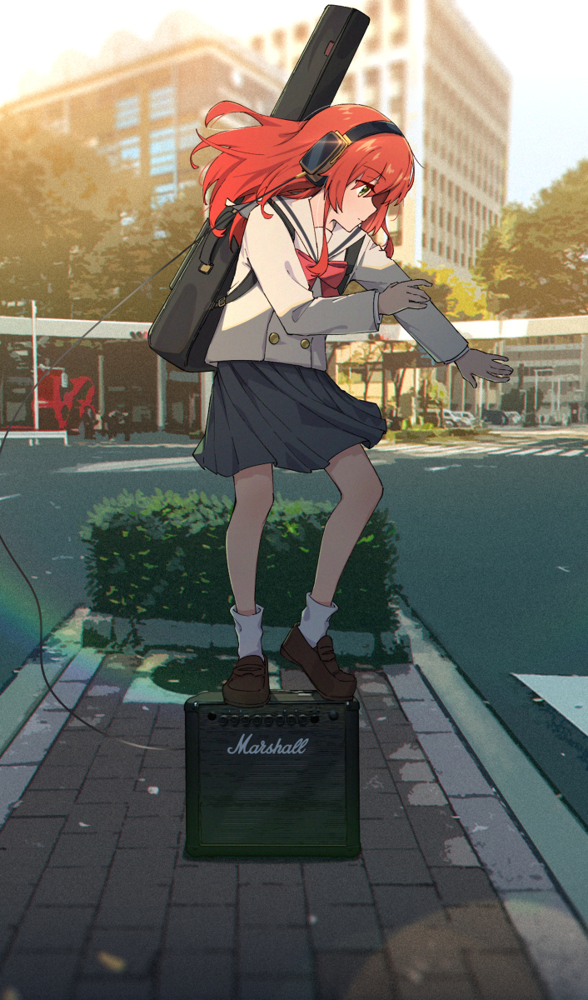
Ikuyo Kita - JLT4n